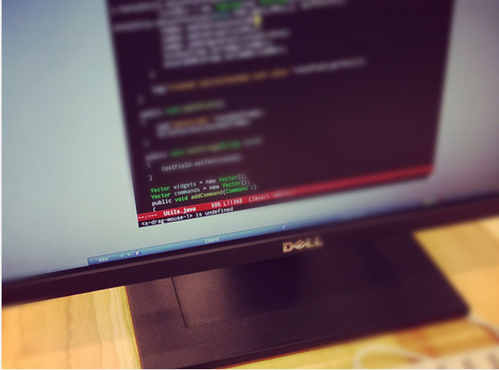

欧朋6.7正式发布
2012年07月 11:23 - 欧朋
每次碰到喜欢的电影，我都会去找关于该电影的幕后故事，看起来津津有味。我想，欧朋 Lite 的幕后故事或许也是有趣的，于是，这是我们第一次尝试把我们创造产品时的点滴分享给大家。
0 键导航
欧朋 Lite 的体积比微博上的一张图片还要小（158 KB），却提供了众多特为键盘手机设计的功能（changelog），其中最独特最 geek 的功能当属 0 键导航，它令使用按键选择屏幕上的链接变得前所未有的轻松。
早在 2009 年，虽然 iPhone 已经被不少文艺青年拿在手上了，但主流的手机还是用按键操作的。在这些按键手机上使用 Opera Mini 上网浏览网页（当年还没有「欧朋」这个中文品牌呢），最痛苦的一件事可以说是用方向键从屏幕上多达几十个的链接中选择其中一个来继续浏览，相当让人抓狂。 在我们 Opera Mini 研发团队内 Emacs 编辑器 颇受欢迎，通过键盘来操作一切的感觉让人愉悦（可以说是「所想即所得」的体验）。于是一帮攻城师开始思考，有什么键盘操作方法能让在浏览器内选择链接变得像操作 Emacs 一样流畅？
最终我们产生的了 0 键导航的想法：访问网页时，按下数字键 0 进入链接选择模式，屏幕上的所有链接会被赋予唯一的数字编号，此时输入相应的数字编号就即可进入该链接，免去狂按方向键之苦。 首先我们需要设计出足够 smart 的方式来通过数字键选择链接。位于键盘上方「确认」键离拇指太远了，如果需要按「确认」键来完成链接选择一定会很不爽。于是我们做了第一个设计决定：直接用数字键来完成链接选择，选择完立刻开始加载该链接。
接下来的问题是，不用「确认」键的话，链接较多的时候如何区分一个链接编号是另一个编号的前缀的情况呢，比如「1」和「18」？我们设计了一条数学公式，来保证任何一个链接编号都不会是其他编号的前缀，这样就可以让「确认」键站一边去了。是什么公式？感兴趣的朋友可以自己推导一下。 陈远同学飞快地完成第一个原型，这时候高兴的他还不知道我对他的折磨还没开始呢……
为了看起来更自然，链接上的数字编号出现和消失时都会加入放大和缩小的动画，这个动画看似简单，但对于性能不强的手机来说，同时让多达几十个编号一起动态缩放其实是非常费力的，所以一开始在这些手机上动画并不流畅。
折磨开始了。为了让动画变得流畅，我们优化动画绘制的算法、精确控制每一帧的缩放比例、微调每一帧中数字的位置和颜色……还有很多很多工作。
花了两三周去做细致的调整后，动画终于变流畅舒服了。
为什么我们愿意花这么多的精力在一个看似不起眼的动画？用户在使用 0 键导航的时候，这个动画可能每天都会出现上百次，一点点的瑕疵都会被累积和放大；更重要的是，我们需要让自己的内心感到满意。
这就是我们在手机上首创 0 键导航的过程，一段程序猿与现实物理条件作斗争的血泪史，很 geek 很好玩。:)